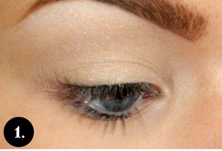

Makeup Tutorials
| Burgundy makeup look will open your beautiful eyes and make them pop. This color is super flattering on blue eyes. | Step 1: Prime your eyes and apply a base, matte shadow that’s close to your skin tone. Apply light yellow/orange shadow to the crease and blend. There shouldn’t be any harsh lines. To the outer half of the crease apply a touch of warm brown shadow. | Step 2: Apply burgundy shade and using a clean blending brush, blend all the shadows together. Everything should look blended and effortless. | Step 3: Blend both colors on your lower lash line using a pencil brush. This step will make your eyes look bigger. | Step 4: Highlight the brow bone and the inner corner of your eye. Use off white, shimmer shade. Add mascara and brown liner to the lower waterline. Finish the look with false lashes. |
|---|
| Purple smokey eye will help accentuate your blue eyes. This look combines peachy and purple eye shadows to create a bold look that’ll last all day. | Step 1: Begin by applying an eye shadow primer. Pick an eye shadow in matte, light peach shade and apply it all over your eye with big blending brush. Make sure it’s flawless. Apply a black eyeliner that’s easy to smudge out. You will smudge it out so it does not’t need to be perfect. | Step 2: Dip your smaller brush into a dark brown shadow and smudge out the eyeliner until you get a softer look. This step may take a while but the ending result will be worth it. | Step 3: Apply a dark purple shadow with matte finish all over your entire lid. Using a clean blending brush, gently blend out the eye shadow. | Step 4: Don’t forget to define your lower lash line. Your lower lash line should be connected with the shadow on your lid. |
|---|---|---|---|---|
|  | ||||
| Step 1: To achieve the look, start with eye primer. Apply it to the entire lid. Next, apply base shadow and white highlight. | Step 2: With a black eyeliner, sketch in a crease liner. Make sure your sketches match. | Step 3: Gently and slowly blend the liner out with a shading brush. Apply and blend a purple eye shadow (or any other) over the line. | Step 4: Add eye shadow underneath the lower lash line and wing out your eyeliner. Finish the look with mascara, false lashes and some white highlight in the inner corner of the eye. |
Follow this link for other great makeup tips!